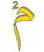

If you can’t get to Liverpool for the current Biennial [18th September-28th November 2010], and especially to the Future Movements Jerusalem section of the City States show at the Contemporary Urban Centre [curated by Samar Martha], then at least you can sample one of the art works here [Press image to play, it takes a few seconds to load].
Raouf Haj Yihya has devised a brilliantly sickening game based on Silwan, Jerusalem which is under constant threat of house demolition by the Israeli Occupation. Palestinians are refused permission to build anything, foreign settlers invade and steal properties across the city and Palestinian citizens of the fair state of Israel are ‘cleansed’ from it every day, while very few Palestinians trapped in the prison of the ‘West Bank’/Palestinian hills are allowed near Occupied Jerusalem. In Silwan homes are demolished, rebuilt, demolished, rebuilt but the threat of land confiscation is ever-present.
Raouf’s game beautifully represents and enlivens all these things. His art is provocative, marries a critical politics with a definite buzz and generates a resonant ambivalence. You can play the game in English or Arabic, instructions and a bit of context are built in to the site. Press play and see how quickly you want to stop yourself demolishing the homes of the Tawiil, Darwish, Daoud families…
If only it were so simple. Yet it is, isn’t it? At least, iterations of notional ‘complexity’ are a convenient distraction while the business of ethnic cleansing goes on right before our eyes. It’s only ‘complex’ because recognising the simplicity of it will require action, effort, something.
Meanwhile, play the game and see how it leaves your guts. You do have ‘guts’ don’t you?
More on the Future Movements show as a whole to come…
Tags: 'square meter', city states, future movements jerusalem, guy mannes-abbott, liverpool biennial, ma'man allah, mamilla, meter square, occupation, palestine, raouf haj yihya, samar martha, sheikh jarrah, silwan, this week in palestine


{kind=link}
September 19, 2010 at 8:53 pm |
[...] This post was mentioned on Twitter by PalFest and JerusalemFirstFilms, JerusalemFirstFilms. JerusalemFirstFilms said: the great game, raouf haj yihya in liverpool: http://t.co/15BgYlC [...]
September 23, 2010 at 2:44 pm |
On this week’s excess; http://electronicintifada.net/v2/article11532.shtml
October 11, 2010 at 4:48 pm |
[...] [18 Sept-28 Nov 2010] is an essential exhibition of work from and about Palestine. I posted on Raouf Haj Yihya’s Meter Square here, the New Statesman bravely ran a rather muted piece here and my own review will run at Babelmed [...]
November 1, 2010 at 6:09 pm |
[...] I posted earlier on Raouf Haj Yihya’s piece here. [...]